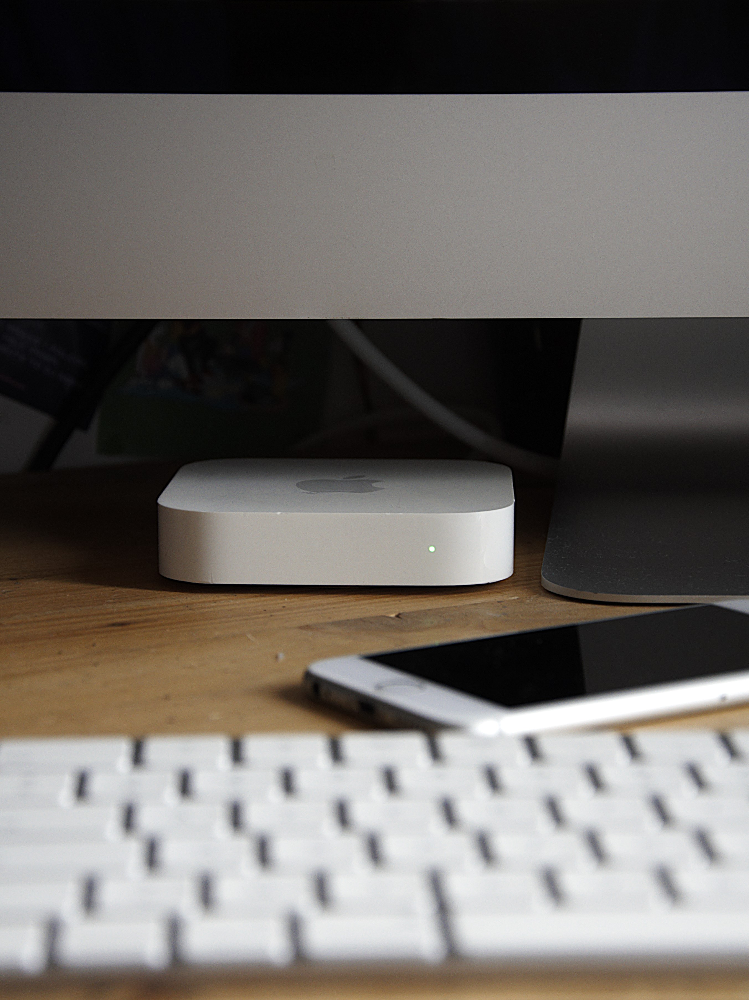
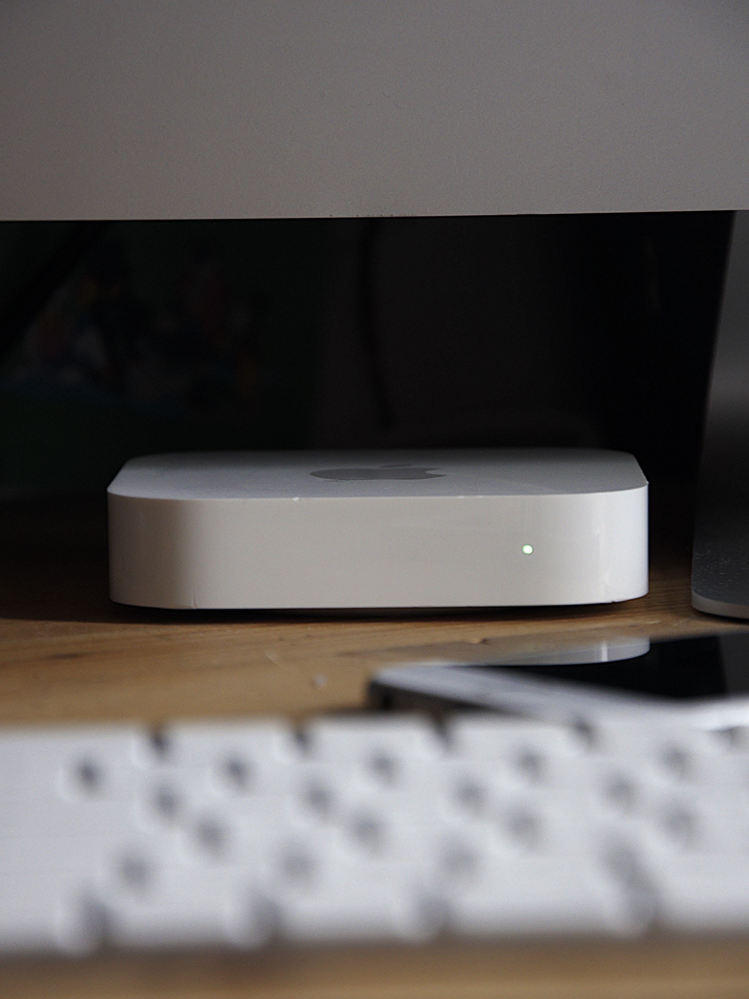
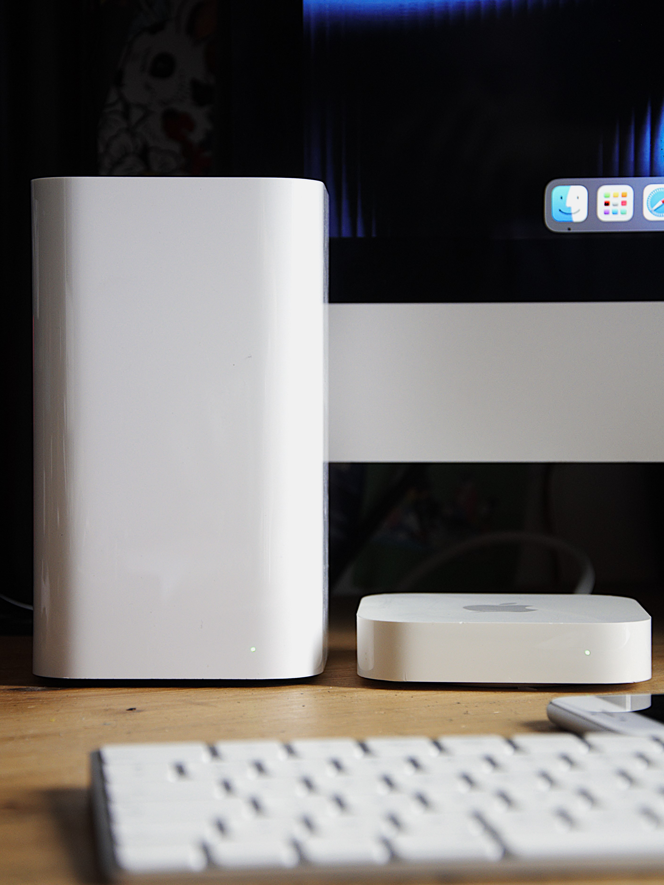

Apple Airport Extreme 6th Gen and Time Capsule
18 of September 2025 - Gamerabbit
The Airport Express 2nd gen was released in 2012 after the 2012's WWDC (the same WWDC where the MacBook Pro Retina was announced), not during the live event, but it appeared on the Apple Website. It is also the last Airport Express to be released.


The tech specs of this beauty :
- Wi-Fi 802.11a/b/g/n
- Frequency: Simultaneous 2.4GHz and 5GHz
- Data Throughput: 450 Megabits per second (Mbps)
-
Interfaces:
- 1x RJ-45 Connector for 10/100Mbps Ethernet WAN
- 1x RJ-45 Connector for 10/100Mbps Ethernet LAN
- USB 2.0 for Network Printing
- 3.5mm headphone Jack with Mini-TOSLINK for AirPlay 1 and 2 output
-
Security:
- WPA/WPA2
- WPA/WPA2 Enterprise
- MiMO: 2x2:2 per band
- Support for up to 50 concurrent devices
- CPU: Marvell 88F6183
- Audio Codec: Texas Instruments Burr-Brown PCM2705 16bit or external DAC via Toslink
- Flash Memory: 16MB
- RAM: 64MB
- Model Number: A1392
- Dimensions : 98 mm x 98 mm x 22 mm
Source: theapplewiki.com
The main use of the Airport Express 2nd or even 1st gen is to airplay music, or use it as a Wi-Fi receiver and allow devices to connect via ethernet (sort of wifi to ethernet bridge). Compared to the first gen which came out in 2008, it has Airplay 2 capabilities, which means multiroom audio. It also have a better wifi chip and Wi-Fi standard, which makes it faster for Airplaying music or just faster internet overall. Now it has dual band wifi, two antennas one for 2,4Ghz and one for 5Ghz which means both can be used at the same time, so you can connect 2,4Ghz devices and 5Ghz devices at the same time. It can also extend the wifi of another Airport device, but not any other router, as stated by Apple :
If you already have a wireless network in your home and want to extend its range, AirPort Express can help. Just place it in range of your primary base station — an AirPort Extreme, Time Capsule, or another AirPort Express — and near the area where you want your wireless connection. Launch the easy-to-use AirPort Utility app on your iOS device or Mac, and you're mere minutes away from long-range Wi-Fi enjoyment.
The redesign of the Airport Express makes it feel more premium, now it can sit on my desk and look like a little Mac. it also harmonizes the design with the Airport Extreme 5th Gen and TimeCapsule that came out a year after. I also like the smaller status LED on the front, which is less intrusive than the big one on the first gen. And for the IOS or IpadOS integration, it's the same as the first gen, it appears in the Wi-Fi settings and you can see the status of the Airport Express, change the name, password and other settings. Which I still find amazing for a deprecated device.

After some digging on internet I found two interesting website. One open and dissasemble the airport express 2nd gen to connect to the debug and do some non user-intended test :
www.embeddedideation.com/2014/03/dissecting-the-airport-express/I also found a airport wiki for that kind of testing but sadly nothing remains of it apart a few WayBack machine saves
web.archive.org/web/20200504100230/http://www.theairportwiki.com/index.php?title=Main_Page#expandThis blog is powered by curiosity, and your support. Every contribution helps me buy more tech to review and share honest insights with you. If you’d like to help out, here’s my paypal : paypal.me/Gamerabbit16